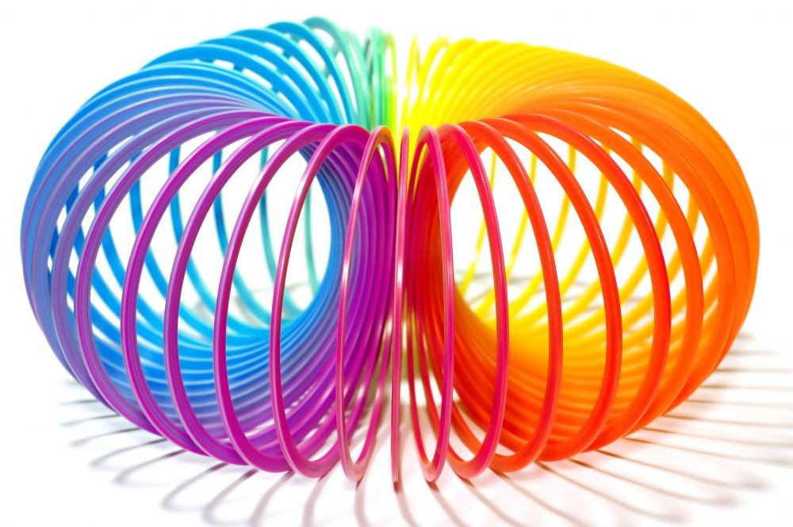
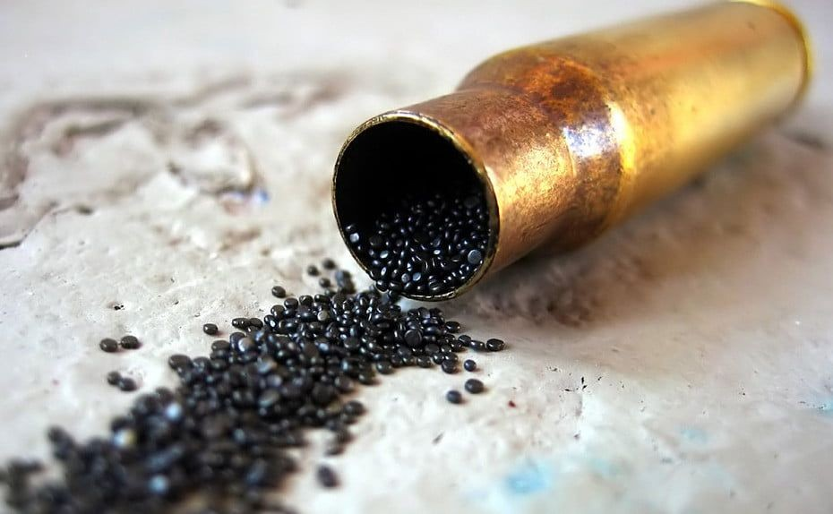

9 Teknologi Hebat Ini Ditemukan Tidak Sengaja tapi Berguna Banget loh!
Jika kamu sekarang sedang memegang smartphone, perhatikan baik-baik kehadirannya. Perlu kamu ketahui, smartphone-mu bisa hadir ke dunia karena penemunya menginginkan adanya teknologi tersebut.
Sebaliknya, ada pula teknologi hebat yang sebenarnya tidak pernah direncanakan dan tercipta karena adanya ketidaksengajaan. Berikut ini adalah teknologi-teknologi yang dimaksud tersebut.
1. X-ray
Teknologi yang digunakan untuk melihat tulang dalam tubuh kita ditemukan Wilhelm Roentgen secara tidak sengaja saat bereksperimen dengan tabung Lenard dan tabung Crookes. Roentgen melihat ada cahaya yang bisa menembus semua objek, namun hanya menyisakan objek yang solid.
2. Velcro
Kalian lebih mengenalnya sebagai perekat yang ada di sepatu. George de Mestral menemukan hal ini saat berjalan-jalan dan penasaran dengan biji Burdock yang dengan mudahnya menempel di jaket dan di bulu anjingnya.
3. Microwave
Percy Spencer sedang melakukan sebuah proyek yang berhubungan dengan radar. Dia menemukan hal yang menarik: tiba-tiba saja coklat yang ada di kantong bajunya meleleh lebih cepat daripada yang dia perkirakan. Dari sinilah dia mencoba hal yang lain, seperti telur dan biji popcorn dan pada pada akhirnya menemukan microwave.
4. Penisilin
Penisilin adalah obat hebat untuk antibiotik dan ditemukan secara tidak sengaja oleh Sir Alexander Fleming pada 1928. Saat dia mencoba mengembangkan bakteri, dia menemukan fakta bahwa ada pertumbuhan yang tak terduga, yang mampu menghambat pertumbuhan bakteri di cawan petrinya.
5. Lem Super
Nama lainnya cyanoacrylate dan ditemukan secara tidak sengaja saat perang dunia ke dua. Harry Coover Junior adalah penemunya dan sebenarnya dia mencoba mencari cara membuat teropong tembakan dari plastik. Saat bereksperimen dengan materi acrylates, dia sadar formulanya terlalu lengket. Dia meninggalkan penemuan itu dan baru menyentuhnya kembali beberapa tahun kemudian.
6. Play-Doh
Mainan anak-anak yang bisa dibuat dalam berbagai bentuk ini ternyata juga ditemukan secara tidak sengaja. Malahan sebenarnya play-doh tidak dikembangkan untuk mainan, tetapi sebagai pembersih kertas dinding pada 1930an.
7.Slinky
Juga dikenal sebagai mainan anak-anak. Richard James mencoba mencari tahu bagaimana per menjaga barang sensitif yang diturunkan dari kapal tanpa merusaknya. Dia menjatuhkan prototipe dan malahan melihat prototipe itu melompat dan kembali seperti semula.
8. Teflon

Saat Roy Plunkett mencoba menemukan varietas baru untuk chlorofluorocarbons, dia malahan menemukan isi kaleng kecil itu hilang dan menyisakan noda ketimbang gas. Penasaran akan hal itu, dia pun mencari tahu dan menemukan jika ada substansi baru yang dapat menjadi medium yang memiliki tingkat ketahanan panas tinggi.
9. Serbuk Pistol
Ironi, serbuk pistol yang digunakan sebagai bahan baku amunisi pertama kalinya diciptakan dengan tujuan sebagai eliksir untuk mendapatkan kehidupan abadi di Cina. Saat bereksperimen, para tabib mendapatkan fakta jika obat yang mereka ramu dapat menyebabkan ledakan. Di sini mereka sadar bahwa substansi baru ini dapat digunakan untuk hal lain.